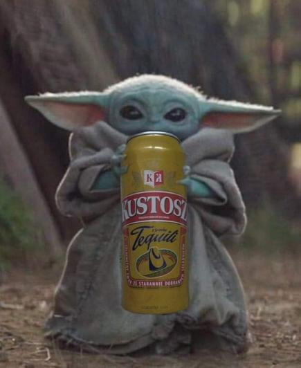

<angular-image-inspector
  [imgHeight]="'100vh'"
  [imgWidth]="'100vh'"
  [overflowAnimationSpeed]="250"
  [wrapperHeight]="'90vh'"
  [wrapperWidth]="'80vw'"
  style="position: absolute; top: 5vh; left: 10vw">
  
</angular-image-inspector>
